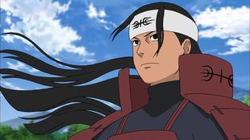

Hashirama Senju (千手柱間, Senju Hashirama) foi o Primeiro Hokage de Konohagakure (初代火影, Shodai Hokage, Literalmente significa "Primeira Sombra do Fogo"). Ele era famoso durante sua vida como o Deus Shinobi (忍の神, Shinobi no Kami, "Shinobi Supremo") por seu incomparável talento ninja. Apesar disso, Hashirama só queria a paz, e para esse fim ele fundou Konoha com seu amigo de infância e rival Madara Uchiha. Embora ele não tenha sido capaz de alcançar a paz durante a sua vida, seu legado continuou a viver, moldando a aldeia há décadas após sua morte.